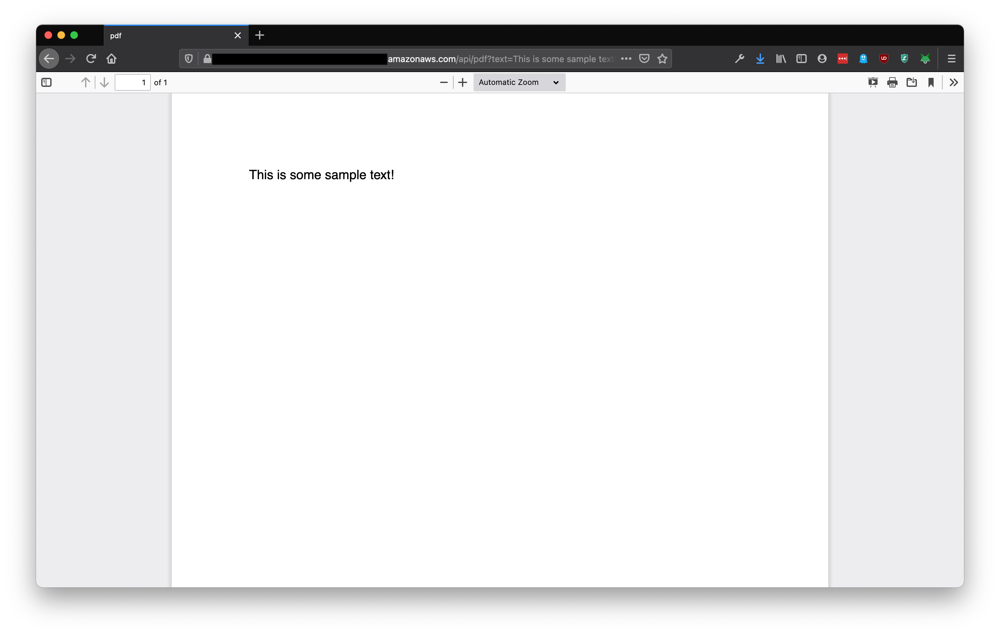

How can you return dynamically generated PDF documents as HTTP responses from serverless functions?
I recently had this exact use-case on a client project. Custom PDFs needed to be created in real-time with dynamic content from an internal data source. PDFs would be accessed via a HTML link from an internal web-app. API responses had to include the document’s binary contents directly, rather than forwarding to an external storage service.
I hadn’t previously built anything that generated PDFs dynamically (let alone using serverless) but discovered how easy this was to do on AWS Lambda using PDFKit and HTTP APIs with API Gateway.
Here’s how I did it…
Creating custom PDF documents in Node.js
There are numerous Node.js libraries for generating PDFs including PDFKit, pdf-lib and HummusJS.
I used PDFKit in my project. It was a good choice for a serverless application for the following reasons:
- Pure JavaScript library. No native libraries to compile or external dependencies needed.
- Small package size. Less than 5 MB according to NPM.
- Easy to use API for text layout. Handles automatic line wrapping.
The library had a really simple API for generating PDFs from dynamic content. Here is all the JavaScript you need to create this custom PDF.
const PDFDocument = require('pdfkit');
const options = { size: 'A5', layout: 'landscape' };
const doc = new PDFDocument(options).font('Helvetica').fontSize(24);
const text_lines = [
"Hello, this is the first line.",
"This is the second line.",
"Finally, this is the third line.",
]
for (text_line of text_lines) {
doc.text(text_line);
}
const buffers = []
doc.on("data", buffers.push.bind(buffers))
doc.on("end", () => {
// Byte stream containing PDF contents
const pdf = Buffer.concat(buffers)
})
doc.end()
Binary Content with HTTP APIs using AWS API Gateway
AWS’s API Gateway service supports two types of API endpoints - HTTP or REST APIs. HTTP APIs (announced in 2019) are simpler, cheaper and faster than the older-style REST APIs, but with a restricted set of features, e.g. no request validation, X-Ray support or private endpoints.
Setting up a HTTP endpoint to return binary content is simpler using HTTP than REST APIs. REST APIs need manual configuration for media types and content handling to support binary responses. HTTP APIs simply need to provide a isBase64Encoded flag in the API response.
Returning PDFs from AWS Lambda Functions
AWS Lambda functions control API Gateway responses using a custom JSON response format.
Here are the response values needed to return a PDF document from the Lambda runtime. The body field contains the PDF document encoded as a Base64 string. The isBase64Encoded flag tells the API Gateway service to render binary content. The PDF document will be served in the HTTP response from the HTTP API endpoint.
{
"statusCode": 200,
"headers": { "Content-Type": "application/pdf" },
"body": "BASE64 ENCODED STRING OF PDF BYTES",
"isBase64Encoded": true
}
Putting it all together using The Serverless Framework
Creating Serverless HTTP APIs is easy with The Serverless Framework. Here are the steps needed to create a custom HTTP API endpoint which generates dynamic PDFs from an AWS Lambda Node.js function. The PDF contains custom content from the HTTP request.
- Create a new serverless project.
sls create -t aws-nodejs -p pdf-generator && cd pdf-generator
- Install the PDFKit library.
npm install pdfkit
- Update the project configuration (
serverless.yml) to define a HTTP API with a serverless function.
service: pdf-generator
provider:
name: aws
runtime: nodejs12.x
httpApi:
cors: true
functions:
generate-pdf:
handler: handler.pdf
events:
- httpApi:
path: /api/pdf
method: get
Note: The Serverless Framework supports both API Gateway services using different event types (http - REST API versus httpApi HTTP API).
- Replace the
handler.jsfile contents with the following source code.
'use strict';
const PDFKit = require("pdfkit")
module.exports.generate_pdf = async (event) => {
const text = event.queryStringParameters.text || 'Hello world';
return new Promise(resolve => {
const doc = new PDFKit()
doc.text(text)
const buffers = []
doc.on("data", buffers.push.bind(buffers))
doc.on("end", () => {
const pdf = Buffer.concat(buffers)
const response = {
statusCode: 200,
headers: {
"Content-Type": "application/pdf",
},
body: pdf.toString("base64"),
isBase64Encoded: true,
}
resolve(response);
})
doc.end()
});
}
- Deploy the project.
sls deploy
- Copy the HTTP API endpoint from the deployment output.
endpoints:
GET - https://<id>.amazonaws.com/api/pdf
- Open the URL with the
textquery parameter containing sample text in a web browser, e.g. (https://<id>.amazonaws.com/api/pdf?text="This is some sample text!") .

You should have a PDF containing the sample text. Changing the sample text and refreshing the page will show a different PDF document. Not bad, huh?